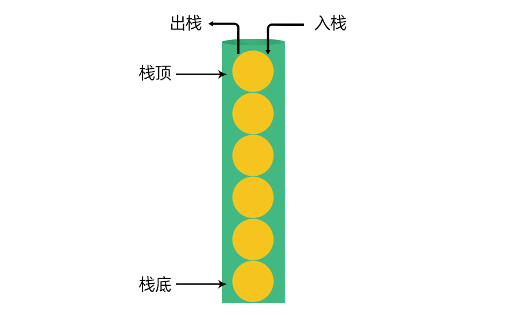
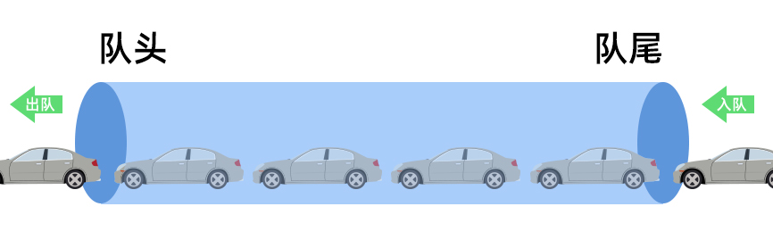
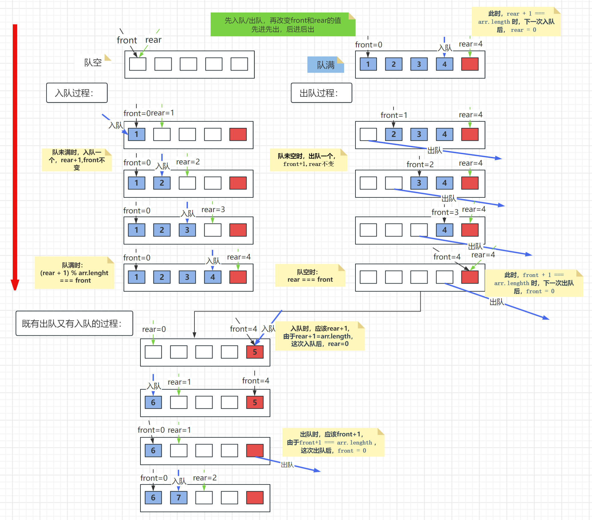

一、Object.defineProperty
Object.defineProperty()方法会直接在一个对象上定义一个新属性，或者修改一个对象的现有属性，并返回此对象。
// 语法 Object.defineProperty(obj, prop, descriptor);- obj ：要定义属性的对象
- prop ：要定义或修改的属性的名称
- descriptor : 要定义或修改的属性描述符，是一个对象
目前存在的属性描述符有两种主要形式：数据描述符 和 存取描述符
数据描述符
- 数据描述符是一个具有值的属性，该值可以是可写的，也可以是不可写的。
- 数据描述符有以下 4 个特性描述它们的行为，具体如下表
| 属性特性 | 说明 | 默认值 |
|---|---|---|
| writable | 表示属性值是否可以被修改，false 不能改，true 可以修改 | false |
| value | 属性的实际值 | undefined |
| configurable | 该特性表示对象的属性是否可以被删除，以及除 value 和 writable 特性外的其他特性是否可以被修改 | false |
| enumerable | 表示属性是否可通过 for-in 循环遍历 |
false |
注
Object.defineProperty定义的属性，如果属性描述符为数据描述符，那这个属性被称为 “数据属性”
- 具体演示
- 当
configurable: false时，重新定义属性，会报错，所有特性都不能修改；只有在它为true才能修改所有属性
- 当
// 定义对象
var obj = {
name: "张三",
};
//用Object.defineProperty定义新属性
Object.defineProperty(obj, "age", {
writable: false,
value: 22,
enumerable: false,
configurable: true,
});
console.log(obj); //{name: '张三', age: '22'}
//修改age,因为writable是false所以不能直接修改,除非重新定义
obj.age = 33;
console.log(obj); //{name: '张三', age: '22'}
//遍历该对象,因为enumerable是false,所以age不能被遍历出来
for (var key in obj) {
console.log(obj[key]); //张三
}
//删除属性,因为configurable是false,所以无法删除
delete obj.age;
console.log(obj); //{name: '张三', age: 22}
//修改属性,因为configurable是true,所以都可修改
Object.defineProperty(obj, "age", {
writable: false,
value: 44,
configurable: false,
enumerable: false,
});
console.log(obj); //{name: '张三', age: 44}
var a1 = Object.getOwnPropertyDescriptor(obj, "age");
console.log(a1); //{value: 44, writable: false, enumerable: false, configurable: false}
Object.getOwnPropertyDescriptor
Object.getOwnPropertyDescriptor()方法可以取得指定属性的属性描述符Object.getOwnPropertyDescriptor(obj, prop);
注意事项
- 直接定义在对象身上的属性，以上属性特性的默认值分别为：
writable:true、value:undefined、configurable：true、enumerable:true - 通过
Object.defineProperty方式定义的属性，其属性特性的默认值分别为：writable:false、value:undefined、configurable：false、enumerable:false
- 直接定义在对象身上的属性，以上属性特性的默认值分别为：
存取描述符
存取描述符有以下 4 个特性描述它们的行为，具体如下表
| 属性特性 | 说明 | 默认 |
|---|---|---|
| configurable | 特性表示对象的属性是否可以被删除，以及除 value 和 writable 特性外的其他特性是否可以被修改 | false |
| enumerable | 表示属性是否可以通过for...in 循环遍历 |
false |
| get获取函数 | 获取函数，在读取属性时调用。这个函数的主要责任就是返回一个有效的值 | undefined |
| set 设置函数 | 设置函数，在写入属性时调用。这个函数决定了对数据做什么样的修改，这个函数有一个参数 | undefined |
注：
Object.defineProperty定义的属性，如果属性描述符为存取描述符，那这个属性被称为 “访问器属性”
configurable与enumerable特性与 数据描述符的用法是一样的get获取函数，在读取属性时调用，这个函数的返回值为这个属性的值set设置函数，在写入属性时调用，这个函数决定了对数据做什么样的修改,重新设置属性值时，这个值就是set函数的实参- 一般用访问器属性获取/修改的属性 与 对象被定义时设置的名称不一样，在定义时会被设置成”私有变量”，我们约定用
_开头的方式命名(依旧可以打点访问)，因为在ES5中无法设置私有变量，只能这么做
var obj = {
name: "张三",
age: 23,
_sex: "女",
identity: "女士",
};
>
Object.defineProperty(obj, "sex", {
//获取属性
get: function () {
return this._sex;
},
//设置属性
set: function (value) {
this._sex = value;
if (value === "女") {
this.identity = "女士";
} else {
this.identity = "先生";
}
},
});
//获取属性
console.log(obj.sex); //女
//重新设置属性
obj.sex = "男";
console.log(obj.sex); //男
console.log(obj.identity); //先生
访问器属性的典型应用场景：
- 当设置或获取一个属性的值时，我们还需要做相关的其它操作，就可以把这个属性设置成访问器属性。
- get 和 set 方法的这种机制，我们可以理解为数据拦截或数据劫持。
也就是在我操作数据时，会被 get 和 set 方法拦截，然后在里面做相应的操作,改变正常的访问和设置行为。
注意事项
- 获取函数和设置函数不一定都要定义
- 只定义获取函数意味着属性是只读的，尝试修改属性会被忽略，严格模式会抛错
- 只有一个设置函数的属性是不能读取的，非严格模式下返回值为
undefined,严格模式下（有可能）会抛错。
Object.defineProperties
Object.defineProperties()方法允许我们在一个对象上同时定义多个属性。
Object.defineProperties(obj, props);obj需要定义和修改属性的对象props用来修改对应属性的描述符对象
var obj = {
_sex: "女",
};
Object.defineProperties(obj, {
name: {
value: "李四",
writable: true,
},
age: {
value: 11,
configurable: false,
},
sex: {
get: function () {
return this._sex;
},
set: function (value) {
this._sex = value;
},
},
});
console.log(obj.sex); //女
obj.sex = "男";
console.log(obj.sex); //男
经典面试题
JavaScript中有没有可能让(a === 1 && a === 2 && a === 3)返回true？
- 这是阿里的一个经典面试题，刚开始一看你觉得这是不可能的，因为一个变量怎么可能同时存在三个不同的值呢？ 但你静下心来分析，你就能找到面试官在考什么 ？
- 如果我们在读取一个变量的值时，能修改这个变量对应的值，那不就有解了吗 ?
- 我们可以把变量 a 当成
window对象的属性，同时 a 还是一个访问器属性，那我们就可以在他的get方法中来修改他的值。
var _a = 0;
Object.defineProperty(window, "a", {
get: function () {
return ++_a;
},
});
if (a === 1 && a === 2 && a == 3) {
console.log("true");
}
通过上面这个面试题给了我们一个启发
- 如果在获取或设置一个变量的值时，还需要做相关的其它操作，我们就可以把这个变量设置成一个访问器属性，然后在他的 get 和 set 方法中做相应的操作。
案例应用1：追溯属性的赋值记录
当我们每次设置属性的值时，可以把设置的值保存在数组中，那这个数组就是用来保存属性赋值的记录
- 除了可以保存赋值记录，还可以查询某次的记录、总值
var obj = {
_num: 0,
_historyValue: [],
};
Object.defineProperty(obj, "num", {
get: function () {
return this._num;
},
set: function (value) {
this._num = value;
this._historyValue.push(value);
},
});
//查找全部历史记录
obj.getHistory = function () {
return this._historyValue;
};
//查找某次记录
obj.go = function (index) {
if (index >= this._historyValue.length)
throw new Error("访问下标超出范围");
return this._historyValue[index - 1];
};
//查找总金额
obj.sum = function () {
var _sum = 0;
for (var i = 0; i < obj._historyValue.length; i++) {
_sum += this._historyValue[i];
}
return _sum;
};
obj.num = 45;
obj.num = 32;
obj.num = 23;
console.log(obj.getHistory());//45,32,23
console.log(obj.go(1)); //45
console.log(obj.sum());//100
案例应用2：数据驱动页面更新（单向）
Vue 中有两种数据绑定方式
- 单向绑定（v-bind）：数据只能从 data 流向页面
- 双向绑定（v-modle）：数据不仅能从 data 流向页面，还能从页面流向 data
在 Vue2 中，其数据的绑定方式底层采用的是Object.defineProperty，在Vue3中，底层采用的是Proxy代理。但本质的原理是一样的。
- 以下案例简单实现了数据的单向绑定，关于双向绑定后面的案例中会讲到
- 效果：当data中的数据发生更新数据，则页面数据就发生相应的变化
><div class="goods">
> <h3 class="title"></h3>
> <img src="" alt="" class="main-img" />
> <p>价格：<span class="price"></span></p>
></div>
><script>
function update() {
var obj = {};
//这三个元素相当于私有变量，外面访问不到
var title = "云原生容器化docker+K8S+CICD弹性扩容集群架构实战";
var mainImg =
"https://sce7a2b9c9d95a-sb-qn.qiqiuyun.net/files/course/2020/04-23/1339186404a1276893.jpg";
var price = 3680.0;
//获取元素
var oTitle = document.querySelector(".title");
var oImg = document.querySelector(".main-img");
var oPrice = document.querySelector(".price");
//初始渲染：
oTitle.innerText = title;
oImg.src = mainImg;
oPrice.innerText = price;
>
var data = Object.defineProperties(obj, {
title: {
get: function () {
return title;
},
set: function (value) {
title = value;
oTitle.innerText = value;
},
},
mainImg: {
get: function () {
return mainImg;
},
set: function (value) {
mainImg = value;
oImg.src = value;
},
},
price: {
get: function () {
return price;
},
set: function (value) {
price = value;
oPrice.innerText = value > 0 ? value : "免费";
},
},
});
return data; //将obj对象返回
}
var date = update(); //调用函数，得到obj对象
//更新数据，当date中的数据发生更新数据，则页面数据就发生相应的变化
date.title = "Web前端高级工程师系统课-星辰班";
date.mainImg =
"https://sce7a2b9c9d95a-sb-qn.qiqiuyun.net/files/course/2022/08-29/210311f40bcf290736.jpg";
date.price = 300;
></script>
二、区分公有、静态、私有属性
JS 公有属性和公有方法
- 公有属性：所有构造函数的实例都可以访问的属性，在构造函数内部通过
this.属性名定义的。- 公有方法：所有构造函数的实例都可以访问的方法，在构造函数
prototype原型上定义的方法。公有属性也称实例属性，公有方法也称实例方法
定义公有方法有两种方式:
- 一种是在在构造函数内部通过
this.方法定义；但不推荐这种方式，因为它在每个实例身上都会创建，并且相互独立，所以就会造成内存的浪费- 另一种方式就是在构造函数的原型上定义，所有实例都是共用原型上的同一个方法，更推荐这种方式
function Person(name, age) {
// 公有属性 实例属性
this.name = name;
this.age = age;
// 公有方法（一般不会这样写）
this.toSleep = function () {
console.log("我正在睡觉");
};
}
// 公有方法 实例方法
Person.prototype.sayHello = function () {
console.log("大家好，我是" + this.name);
};
>
var p1 = new Person("张三", 32);
console.log(p1.name);
console.log(p1.age);
p1.sayHello();
JS 静态属性和静态方法
- 静态属性：只有类（构造函数）本身能访问的属性，通过
类名.属性名来定义- 静态方法：只有类（构造函数）本身能访问的属性，通过
类名.方法名 = function() {...}来定义- 访问的时候也是通过
类名.属性名/方法名的方式
function Person() {}
// 静态属性
Person.length = 0;
Person.children = function () {
console.log("静态方法");
};
>
var p = new Person();
console.log(p.length); // 不能访问
console.log(Person.length); // 能访问
JS 私有属性、私有方法和特权方法
- 私有属性：只能在构造函数内部才能访问的属性，如果外部要访问必须通过指定的方法来访问和修改
- 私有方法：是指对象不希望公开的方法，只能在构造函数内部才能调用的方法
- 特权方法：是指有权访问内部私有属性和私有方法的公有方法
注意：
- 在JS中并没有私有属性和私有方法的概念，所以需要利用闭包的思想
- 在构造函数里直接声明属性和方法
注意与公有的声明方式：
this.属性/方法区分- 行业约定规范，私有属性和方法在命名时以
_下划线开头
function Price() {
// 私有属性
var _price = 0;
>
// 私有方法 用来对属性price做相关操作
function _computed() {
return _price > 0 ? "￥" + _price : "免费";
}
>
// 特权方法 获取属性计算后的值
this.getPrice = function () {
return _computed();
};
>
// 特权方法
this.setPrice = function (value) {
if (typeof value !== "number") throw new TypeError("传入一个数字");
_price = value;
};
}
>
var p = new Price();
p.setPrice(200.05);
console.log(p.getPrice()); // ￥200.05
p.setPrice(-90); //
console.log(p.getPrice()); // 免费
混合模式
- 将所有实例都操作的特权方法定义在构造函数的原型链上
- 特权方法要访问到私有属性和方法可以利用闭包来实现
矛盾点：
- 定义在原型链上的是公有方法,它只能通过
this.的方式访问构造函数里的公有属性/方法，不能访问到私有的- 因此要用立即执行函数+闭包的方式才能实现混合模式
var GetNum = (function () {
var _num = 4;
function GetNum() {}
GetNum.prototype.get = function () {
return _num;
};
GetNum.prototype.set = function (value) {
_num = value;
};
return GetNum;
})();
>
var n1 = new GetNum();
console.log(n1);
console.log(n1.get());//4
n1.set(555);
console.log(n1.get());//555
案例应用
- 利用 JS 来模拟现实生活中，父亲有挣钱、花钱、查看账户金额的能力，但是他的孩子只有花钱能力
- 我们可以定义两个类：Father类（模拟父亲） Children类（模拟孩子们）
Father 类身上有的方法和属性
| 属性与方法 | 功能 |
|---|---|
| 私有属性 | _money |
| 静态方法 | save |
| 静态方法 | take |
| 静态方法 | view |
| 实例方法 | take |
Children 类身上有的方法和属性
| 属性和方法 | 功能 |
|---|---|
| 实例属性 姓名 | 保存孩子的姓名 |
var Father = (function () {
//私有属性
var _money = 0;
function Father() {}
//静态方法：存钱
Father.save = function (value) {
_money += value;
console.log("父亲存了" + value + "元");
};
// 静态方法 取钱
Father.take = function (value) {
_money -= value;
console.log("父亲取走" + value + "元");
};
// 静态方法 查看
Father.view = function () {
console.log("目前账户还有" + _money + "元");
return _money;
};
//公有方法(实例方法)
Father.prototype.take = function (value) {
_money -= value;
console.log(this.name + "取走" + value + "元");
};
return Father;
})();
//子类
function Child(name) {
this.name = "张三";
Father.call(this); // 经典继承（盗用构造函数）
}
// 原型式继承
Child.prototype = Object.create(Father.prototype);
>
var child1 = new Child();
Father.save(2000); //父亲存了2000元
Father.take(200); //父亲取走200元
Father.view(); //目前账户还有1800元
child1.take(100); //张三取走100元
注意： 以上情况，所有实例本质上操作的是同一个变量
_money
多彩运动的小球
- 多彩运动小球的实现原理
- 当鼠标滑动时，会产生一系列的彩色小球，然后这些小球开始向不同的方向运动，运动过程中会发生（大小，位置，透明度）的变化
- 所以我们需要构建一个球类，这个类身上有以下相关的属性和方法
属性和方法 说明 实例属性x 小球水平方向坐标 ，默认值 0 实例属性y 小球垂直方向从标 ，默认值 0 实例属性r 小球的半径，默认值 20 实例属性color 数组，从数组中随机取出一个颜色作为小球的颜色 实例属性 opacity 小球的透明度（刚开始透明度为 1） 实例属性 speedX 小球水平方向运动速度（步长）随机 （取值范围[-10,10]） 实例属性 speedY 小球垂直方向运动速度（步长）随机（取值范围[-10,10]） 实例属性 dom 小球的 dom 结构 实例方法 init 初始化一个小球（根据小球属性，在页面创建一个真实的 DOM 球） 实例方法 update 更新小球的属性值(x,y,r,opacity)，同时当小球透明度为 0，将其从 DOM 中删除
- x,y属性由鼠标的位置决定，所以当
onmousemove事件触发时，创建实例 speedx、speedy：不能同时等于0，用do...while语句
>/**
> * Ball 创建一个球类
> * @param x坐标 默认值 0
> * @param y坐标 默认值 0
> * @param r小球半径 默认 20
> */
function Ball(x = 0, y = 0, r = 20) {
this.x = x; // x坐标
this.y = y; // y坐标
this.r = r; // 小球半径
// 随机生成一个小球颜色
this.color = (function () {
var color = [
"red",
"pink",
"skyblue",
"orange",
"tomato",
"khaki",
"greenyellow",
];
var index = (Math.random() * color.length) >> 0;
return color[index];
})();
this.opacity = 1; // 小球透明度
// 小球运动速度，speedX和speedY的取值范围 [-10,10]，但不能同时为0
do {
this.speedX = Math.floor(Math.random() * 21) - 10;
this.speedY = Math.floor(Math.random() * 21) - 10;
} while (this.speedX === 0 && this.speedY === 0);
>
// 在new Ball(),内部会自动调用this.init()初始化小球，在页面显示，其 实现代码看下一步
this.init();
}
>
// 鼠标在页面滑动时，会创建实例化的小球
document.onmousemove = function (e) {
var pageX = e.pageX;
var pageY = e.pageY;
new Ball(pageX, pageY);
};
init方法- 要在定义实例属性的最后调用该方法；创建实例的时候就会自动调用,实现在页面插入一个真实的小球；
- 创建DOM后，要将DOM设置成绝对定位
- 为了鼠标出现在小球中心，小球的宽等于
x-小球的半径，高同理
Ball.prototype.init = function () {
this.dom = document.createElement("div"); // 创建dom结构
this.dom.style.position = "absolute";
this.dom.style.left = this.x - this.r + "px";
this.dom.style.top = this.y - this.r + "px";
this.dom.style.width = 2 * this.r + "px";
this.dom.style.height = 2 * this.r + "px";
this.dom.style.borderRadius = "50%";
this.dom.style.backgroundColor = this.color;
// 添加到页面
document.body.appendChild(this.dom);
};
update方法- 放在定时器内，每间隔一段时间就调用
- 更新小球的属性值(x,y,r,opacity)，并将这些值再次更新到DOM中
- 监控小球的透明度，一旦透明度为0，就把他从DOM和数组中删除
Ball.prototype.update = function () {
this.x += this.speedX; // 更新x坐标
this.y += this.speedY; // 更新y坐标
this.r += 0.3; // 更新半径
this.opacity -= 0.01;
>
// 更新的属性更新到真实DOM上
this.dom.style.display = "none";
this.dom.style.width = this.r * 2 + "px";
this.dom.style.height = this.r * 2 + "px";
this.dom.style.left = this.x - this.r + "px";
this.dom.style.top = this.y - this.r + "px";
this.dom.style.opacity = this.opacity;
this.dom.style.display = "block";
};
- 那如何监控鼠标在滑动过程中被创建出来的一堆小球，然后让他们不停的运动呢 ？
- 我们需要在球类上创建一个私有属性
_ballArr = []，用来保存鼠标移动时创建出来的实例化小球。每实例化一个小球，就把这个实例化的小球对象添加到_ballArr数组中 - 还需要创建一个静态方法
ballArr用来获取所有实例化的小球。这样我们就能拿到所有实例化的小球，对他们进行操作。属性和方法 说明 私有属性 _ballArr数组，用来保存创建好的实例化小球 静态方法 getBalls用来获取所有实例化的小球 （返回数组 ballArr）
- 我们需要在球类上创建一个私有属性
var _ballArr=[]; // 类的私有属性
// 静态方法
Ball.getBalls = function () {
return ballArr;
};
>
function Ball(x = 0, y = 0, r = 20){
// ......
// .....以下代码放在 this.init() 后面
>
// 每次创建的实例对象，添加到数组 _ballArrl中
_ballArr.push(this);
}
拿到实例化小球后，如何让小球运动起来 ？
- 要让小球运动起来，需要开启一个定时器，让球不断的调用自身的
update方法，实现小球运动及运动中各种属性的变化- 同时还要判断如果小球的透明度为
0，则需要将小球从_ballArr数组和DOM中删除，确保垃圾能及时被回收，不至于小球多了造成页面卡顿,这段代码写在update方法的最后
var timer = setInterval(function () {
var balls = Ball.getBalls();
// 更新小球
for (var i = 0; i < balls.length; i++) {
balls[i].update();
}
}, 20);
>
// 以下代码添加到update方法的最后面
// 如果小球的透明度小于等于0,则将其从数组和DOM中删除
if (this.opacity <= 0) {
for (var i = 0; i < _ballArr.length; i++) {
if (_ballArr[i] === this) {
_ballArr.splice(i, 1); // 从数组中删除
document.body.removeChild(this.dom); // 从DOM中删除
break;
}
}
}
- 完整源码
- 为了防止变量造成全局污染，则利用闭包，将所有代码封装在立即执行函数中，然后将
Ball类作为返回值返回
- 为了防止变量造成全局污染，则利用闭包，将所有代码封装在立即执行函数中，然后将
//构造函数
var Ball = (function () {
var _ballArr = [];
function Ball(x = 0, y = 0, r = 20) {
//公有属性
this.x = x;
this.y = y;
this.r = r;
this.opacity = 1;
this.color = (function () {
var colorArr = ["red", "skyblue", "pink", "tomato", "yellow"];
var index = (Math.random() * colorArr.length) >> 0;
return colorArr[index];
})();
do {
this.speedx = (Math.random() * 21 - 10) >> 0;
this.speedy = (Math.random() * 21 - 10) >> 0;
} while (this.speedx == 0 && this.speedy == 0);
_ballArr.push(this); //将创建的实例放入数组中
//初始化小球
this.init();
}
//静态方法
Ball.ballArr = function () {
return _ballArr;
};
//公有方法：初始化
Ball.prototype.init = function () {
this.dom = document.createElement("div");
//球在鼠标中心出现
this.dom.style.position = "absolute";
this.dom.style.left = this.x - this.r / 2 + "px";
this.dom.style.top = this.y - this.r / 2 + "px";
this.dom.style.width = this.r * 2 + "px";
this.dom.style.height = this.r * 2 + "px";
this.dom.style.borderRadius = "50%";
this.dom.style.opacity = this.opacity;
this.dom.style.backgroundColor = this.color;
//插入页面
document.body.appendChild(this.dom);
};
//公有方法：运动函数
Ball.prototype.update = function () {
this.x += this.speedx;
this.y += this.speedy;
this.r += 0.3;
this.opacity -= 0.01;
//将更新后的属性 更新到真实的DOM上
this.dom.style.display = "none";
this.dom.style.left = this.x + "px";
this.dom.style.top = this.y - this.r / 2 + "px";
this.dom.style.width = this.r * 2 + "px";
this.dom.style.height = this.r * 2 + "px";
this.dom.style.opacity = this.opacity;
this.dom.style.display = "block";
>
//删除dom、数组中的实例
if (this.opacity <= 0) {
// 找到小球实例在数组中的位置，然后将他从数组中删除
var index = _ballArr.indexOf(this);
_ballArr.splice(index, 1);
// 从dom中删除
document.body.removeChild(this.dom);
}
};
return Ball;
})();
>
//定时器
var timer = setInterval(function () {
var balls = Ball.ballArr();
for (var i = 0; i < balls.length; i++) {
balls[i].update();
}
}, 20);
//鼠标事件
document.onmousemove = function (e) {
var target = e.target;
var _x = e.pageX;
var _y = e.pageY;
new Ball(_x, _y);
};
三、JS 实现栈与队列
- 什么是栈
栈是一种先进后出的数据结构，是一种逻辑结构，一种抽像出来的理论模型
- 入栈操作（push）：就将新元素放入到栈中，先放的在栈底
- 出栈操作（pop）：就是将元素从栈中弹出，只有栈顶元素才能出
- 之前课程中我们简单的用数组来模拟一个栈的出栈和入栈全过程
- 数组相当于一个栈结构，向数组中
push添中元素为入栈，从数组尾部pop取出元素为出栈接下来，我们利用 JS 来模拟一个完整的栈对象
- JS 实现栈结构
- 构建一个
Stack类，只要new Stack()就能创建一个新的栈 - 一个基础的栈对象要求有以下方法和属性
方法 说明 push 入栈，向栈中添加元素 pop 出栈，从栈顶部弹出元素 isFull 查看栈是否满 isEmpty 查看栈是否为空 getTop 取出栈顶部元素 clear 清空栈中元素 view 查看当前栈中元素
- 构建一个
| 属性 | 说明 |
|---|---|
| 实例属性：size | 查看栈的长度（模拟大小） |
| 私有属性：_stack | 数组，模拟栈容器，栈中元素都存在_stack中；私有属性，不允许直接操作_stack，只能通过给定的接口来操作 |
注：
- 以上栈（数组）的长度是在动态变化的，但最终入栈的个数不能大于栈的
size大小- 如果栈满，再入栈就会抛出栈满错误提示
- 如果栈空，再出栈就会抛出栈空错误提示
- 基础版代码
>/**
> * Stack 栈
> * size 栈的大小（长度）
> */
function Stack(size = 100) {
this._stack = []; // 私有属性，栈容器
this.size = size; // 返回栈的大小（长度）,可更改
}
>
// 判断栈是否满,满返回true,否则false
Stack.prototype.isFull = function () {
return this._stack.length >= this.size ? true : false;
};
>
// 判断栈是否为空,为空返回true,否则false
Stack.prototype.isEmpty = function () {
return this._stack.length <= 0 ? true : false;
};
>
// 入栈
Stack.prototype.push = function (value) {
if (this.isFull()) {
throw new Error("栈满，不能再填加元素");
} else {
this._stack.push(value);
return true; // 返回true，表示入栈成功
}
};
>
// 出栈
Stack.prototype.pop = function () {
if (this.isEmpty()) {
throw new Error("栈空，没有元素可以出栈");
} else {
return this._stack.pop(); // 返回出栈元素
}
};
>
// 取出栈顶元素
Stack.prototype.getTop = function () {
return this._stack[this._stack.length - 1];
};
>
// 查看栈中元素
Stack.prototype.view = function () {
console.log("当前栈中的元素有");
this._stack.forEach(function (item) {
console.log(item);
});
};
>
// 清空栈
Stack.prototype.clear = function () {
this._stack = [];
return true; // 清空栈成功
};
>
var stack = new Stack(4);
// 入栈
console.log(stack.push(1)); // true
console.log(stack.push(2)); // true
console.log(stack.push(3)); // true
console.log(stack.push(4)); // true
// 查看栈是否满
console.log(stack.isFull()); // true
// 查看栈元素
console.log(stack.view()); // [1, 2, 3, 4]
// 出栈
console.log(stack.pop()); // 4
console.log(stack.pop()); // 3
// 查看栈元素
console.log(stack.view()); // [1, 2]
// 查看栈是否满
console.log(stack.isFull()); // false
// 清空栈
console.log(stack.clear()); // true
// 判断栈是否为空
console.log(stack.isEmpty()); // true
// 查看栈元素
console.log(stack.view()); // []
- JS 实现栈结构 - 优化版
以上版本，最终用户本质上还是可以通过
stack._stack的方式操作数组- 我们可以把私有属性的名字，改成
Symbol类型，这样用户就真正没有办法访问到该属性了
- 我们可以把私有属性的名字，改成
var Stack = (function () {
>/**
> * Stack 栈
> * size 栈的大小（长度）
> */
var _stack = Symbol("_stack"); // 生成唯一标识符
function Stack(size = 100) {
this[_stack] = []; // 私有属性，栈容器
var _size = size; // 返回栈的大小（长度）,可更改
>
Object.defineProperty(this, "size", {
get: function () {
return _size;
},
// 当对size进行操作时，需要对数组做相关操作
set: function (value) {
if (value < _size) {
this[_stack] = this[_stack].slice(0, value);
_size = value;
}
},
});
}
>
// 判断栈是否满,满返回true,否则false
Stack.prototype.isFull = function () {
return this[_stack].length === this._size ? true : false;
};
>
// 判断栈是否为空,为空返回true,否则false
Stack.prototype.isEmpty = function () {
return this[_stack].length === 0 ? true : false;
};
>
// 入栈
Stack.prototype.push = function (value) {
if (this.isFull()) {
throw new Error("栈满，不能再填加元素");
} else {
this[_stack].push(value);
return true; // 返回true，表示入栈成功
}
};
>
// 出栈
Stack.prototype.pop = function () {
if (this.isEmpty()) {
throw new Error("栈空，没有元素可以出栈");
} else {
return this[_stack].pop(); // 返回出栈元素
}
};
>
// 取出栈顶元素
Stack.prototype.getTop = function () {
return this[_stack][this[_stack].length - 1];
};
>
// 查看栈中元素
Stack.prototype.view = function () {
console.log("当前栈中的元素有");
this[_stack].forEach(function (item) {
console.log(item);
});
};
>
// 清空栈
Stack.prototype.clear = function () {
this[_stack] = [];
return true; // 清空栈成功
};
return Stack;
})();
>
var stack = new Stack();
// 入栈
console.log(stack.push(1)); // true
console.log(stack.push(2)); // true
console.log(stack.push(3)); // true
console.log(stack.push(4)); // true
// 查看栈是否满
console.log(stack.isFull()); // true
// 查看栈元素
console.log(stack.view()); // [1, 2, 3, 4]
// 出栈
console.log(stack.pop()); // 4
console.log(stack.pop()); // 3
// 查看栈元素
console.log(stack.view()); // [1, 2]
// 查看栈是否满
console.log(stack.isFull()); // false
// 清空栈
console.log(stack.clear()); // true
// 判断栈是否为空
console.log(stack.isEmpty()); // true
// 查看栈元素
console.log(stack.view()); // []
什么是队列
现在我们来学习一种新的数据结构队列
- 队列是一种线性的数据结构，它的特点是先进先出（
First In First Out，简称FIFO），后进后出 - 队列的出口端叫作队头（
front），队列的入口端叫作队尾（rear） - 入队（
enqueue）就是把新元素放入队列中，只允许在队列的队尾放入元素 - 出队（
dequeue）就是把元素移出队列，只允许在队列的队头移出元素
- 队列是一种线性的数据结构，它的特点是先进先出（
JS 实现队列
构建一个 Queue 类，只要new Queue() 就能创建一个新的队列
- 一个基础的队列对象要求有以下方法和属性
| 方法 | 说明 |
|---|---|
| enQueue | 入队，向队尾添加元素 |
| deQueue | 出队，从队头删除元素 |
| isFull | 判断队列是否已满 |
| isEmpty | 判断队列是否为空 |
| getFront | 取出队头元素 |
| clear | 清空队列 |
| view | 查看队列中元素 |
| 属性 | 说明 |
|---|---|
私有属性：_queue |
数组，模拟队列容器，队中元素都存在_queue中；私有属性，不允许直接操作_queue，只能通过给定的接口来操作 |
| 实例属性：size | 队列的大小（长度） |
><script>
var Queue = (function () {
var _queue = Symbol("queue"); // 创建唯一标识符
function Queue(size) {
this[_queue] = []; // 私有属性，队列容器
this.size = size; // 队列的长度（大小）
}
// 判断队列是否已满,true表示已满，false表示未满
Queue.prototype.isFull = function () {
return this[_queue].length === this.size ? true : false;
};
// 判断队列是否为空
Queue.prototype.isEmpty = function () {
return this[_queue].length === 0 ? true : false;
};
>
// 入队
Queue.prototype.enQueue = function (value) {
if (this.isFull()) {
throw new Error("队列已满，不能现入队");
} else {
this[_queue].push(value);
return true; //表示入队成功
}
};
>
// 出队
Queue.prototype.deQueue = function () {
if (this.isEmpty()) {
throw new Error("队列已为空，没有元素可出队");
} else {
return this[_queue].shift(); // 返回出队元素
}
};
>
// 取出队头元素
Queue.prototype.getFront = function () {
return this[_queue][0]; // 返回值为undefined表示当前队列已空
};
>
// 查看队列中元素
Queue.prototype.view = function () {
this[_queue].forEach(function (item) {
console.log(item);
});
};
>
// 清空队列
Queue.prototype.clear = function () {
this[_queue] = [];
return true; // true清空队列成功
};
return Queue;
})();
></script>
上述代码与模拟栈类似，只是出栈方式不同
上述版本缺点
- 以上版本，在入队时还好，直接尾部插入元素，但是在出队时从队头取出元素，本质上会造成整个数组往后的所有元素都向前移动，非常消耗性能
- 同时队列的容量大小一直是在不断变化的，而实际上一个队列的大小在刚开始分配时，大小应该是固定才更合理
优化方向- 有没有什么办法能实现在出队时，能正常出，不需要动数组中的其它元素呢 ?
- 同时保证整个出队和入队过程程中，栈的容量大小是固定的
- 优化版本 - JS 实现循环队列
- 我们可以利用双指针思想，同时采用循环队列的方式来实现
- 以下图中的队列容量（长度）为
4，需要用长度为5的数组来实现。
- 定义两个指针
front和rear，front和rear分别表示当前队列队头和队尾的下标
front=rear=0- 队列的长度为用户设定的
size+1，初始化后，不可更改
this[_queue] = new Array(size + 1);
- 查看队列元素：使用
filter方法，过滤空元素，声明一个变量保存由filter方法筛选出来的元素所组成的数组- 清空队列：初始化队列容器、队头、队尾
- 如果队未满，
- 入队一个元素，
rear + 1，向右移一位，front不变- 当
rear + 1 === arr.length时，则在下一次入队后，rear = 0
因此入队：
- 入队时要判断当前队是否满，如果满，啥也不做
- 先在队头处放置入队元素
- 然后移动
rear的位置，要判断rear + 1 === arr.lenght,如果成立，则入队后，rear = 0- 如果未满，则
rear + 1- 所以可得
rear的计算公式：rear = (rear + 1) % arr.length
- 如果队未空，
- 出队一个元素，
front + 1，向右移一位，rear不变- 当
front + 1 === arr.lenght时，则在下一次出队后，front = 0
因此出队：
- 出队时要判断当前队是否为空，如果为空，啥也不做。
- 如果队不为空，保存队尾的值，并返回
- 将当前队尾的值设为
null,出队不是真的把这个元素从数组中删除,而是把指针移动到下一位,为了能看到效果,我们把出队的元素的位置值设置为null- 接着改变
front的位置，要判断front+1 === arr.length如果成立则出队后，front = 0，- 如果不成立，则
front + 1- 因此可得
front的计算公式：front = (front + 1) % arr.length
- 队满的条件：当
(rear + 1) % arr.lenght === front时，表示队满- 队空的条件：当
rear === front时，表示队空- 重点强调：队列的容量 + 1 = 数组的长度
- 先进先出：从最左边开始入队，队列容量满了之后，出列时，也是从最左边开始出队(从队头删除元素)；
- 但再次入队时，不是从最左边开始，而是入到
过渡项：数组长度比队列容量多的那块；之后就是从最左边开始(此时的最左边相对于front来说是队尾)
- 用
Object.defineProperty()方法，形成访问、设置size的接口
- get：返回私有变量
_size的值- set：抛出错误，不允许更改
><script>
var Queue = (function () {
var _queue = Symbol("queue");
var _front = Symbol("front");
var _rear = Symbol("rear");
function Queue(size = 100) {
// 私有属性
this[_queue] = new Array(size + 1); // 队容器（固定长度）
this[_front] = 0; // 队头
this[_rear] = 0; // 队尾
// 实例属性
var _size = size;
Object.defineProperty(this, "size", {
get: function () {
return _size;
},
set: function () {
throw new Error("不允许设置size的值");
},
});
}
>
// 队是否为空
Queue.prototype.isFull = function () {
// 队满的条件
return (this[_rear] + 1) % this[_queue].length === this[_front];
};
// 队是否为空
Queue.prototype.isEmpty = function () {
return this[_front] === this[_rear];
};
// 入队
Queue.prototype.enQueue = function (value) {
//入队前要判断当前队列是否已满,如果已满,则啥也不做,抛出错误提示
if (this.isFull()) throw new Error("当前队列已满,不能再入队");
>
// 先在当前位置入队元素,然后指向右移动
this[_queue][this[_rear]] = value;
// 判断当前是不是在数组的最后面,最后一位就回到0
this[_rear] = (this[_rear] + 1) % this[_queue].length;
return true;
};
// 出队
Queue.prototype.deQueue = function () {
// 出队前要判断当前队列是否为空
if (this.isEmpty()) throw new Error("当前队列已空,没有元素可出队");
// 只存要出队的元素
var deQueueValue = this[_queue][this[_front]];
// 出队不是真的把这个元素从数组中删除,而是把指针移动到下一位
// 为了能看到效果,我们把出队的元素的位置值设置为null
this[_queue][this[_front]] = null;
// 判断出对的指针是否指向了数组的最后面,如果是,则出队后指向0
this[_front] = (this[_front] + 1) % this[_queue].length;
>
return deQueueValue;
};
>
// 队头元素
Queue.prototype.getTop = function () {
// 返回出队的元素,如果为null表示当前队列为空
return this[_queue][this[_front]];
};
// 查看队列元素
Queue.prototype.view = function () {
var result = this[_queue].filter(function (item) {
return item !== null;
});
return result;
};
// 清空队列
Queue.prototype.clear = function () {
// 清空队列,就是重新初始化队列
this[_queue] = new Array(this.size + 1);
this[_front] = this[_rear] = 0;
return true;
};
return Queue;
})();
></script>